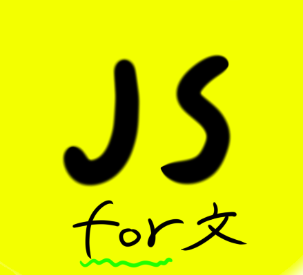
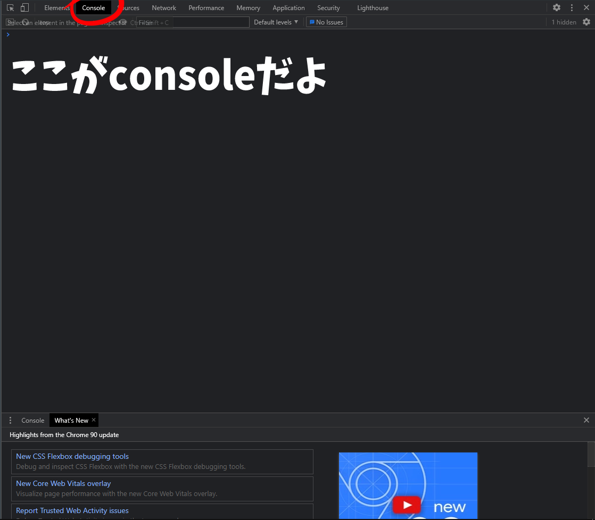
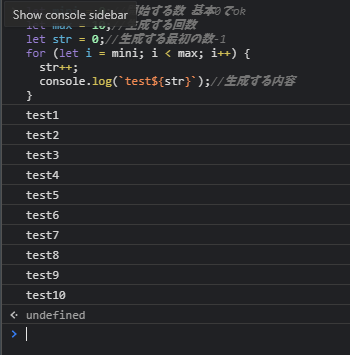
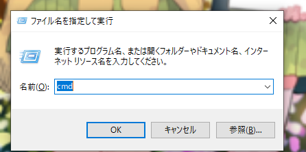
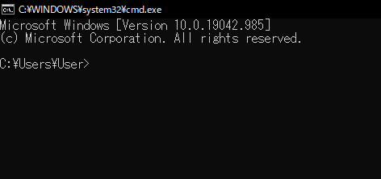
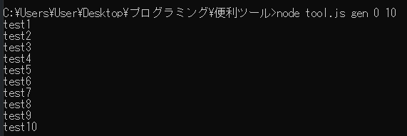

めんどくさい作業も自動化！for文をマスターしよう！
こんにちはシューです
今回はアドオンに直接関係はしていないですが、知っておくと便利なので記事を作ります
「ここの部分の数値を1ずつ変えてコピペするのめんどくさいな...」みたいなとき、ありますよね
そんなことを解決する方法を今回は解説します
ただしこれは少しハードルが高いのでわからないところは積極的に調べてください
どうやってやるの？
自動生成をするにはjsonとは別のプログラミング言語を使用します
例えばJavaScriptやpythonなどが有名で簡単です
今回はJavaScriptを使っていきたいと思います
Javascriptのfor文というものを使うことで先ほどの「数値を1ずつ変えてコピペ」の作業が0になります
少し語弊があるかもしれませんが、コピペの数は断然減ります
今回はfor文の解説と環境構成を説明します。JavaScript自体の詳しい解説はしないので自分で調べてみてください
では使うものを紹介していきます
前提としてwindows 10で実行をしていきます。もっと深くなるとスマホで実行もできます
必要なものはnode.js（サーバーソフト）、javascriptの前提知識だけでできます
一応web常でも実行できますが、おすすめはしないです。これに関してはあとで解説します
実際に作ってみよう！
では環境を構築する前に説明と簡単な動作を見ていきましょう
ここではまず最初にchromeブラウザで実行していきます
まず準備としてこの記事を開いてるタブでも新しいタブでもいいですが、キーボードのF12を押してください
デベロッパツールといって、基本的にデバッグをするために使ったりします
そこのconsoleというタブを開いて下のような画面になったら準備okです

このconsoleで最初にデバッグをしていきます
以下がコードです
これをコピーしてconsoleに張り付けてエンターをおしてみてください
すると下の画像のようにtest1からtest10まであると思います

こんな感じで生成してくれます
これを一括選択して張り付ければいいんですがコピーしてみると...
test1
VM37:7 test2
VM37:7 test3
VM37:7 test4
VM37:7 test5
VM37:7 test6
VM37:7 test7
VM37:7 test8
VM37:7 test9
VM37:7 test10
このようになってしまいます
これだと不便なので上で言った「一応web常でも実行できますが、おすすめはしないです。これに関してはあとで解説します」の理由になります
なのであとで解説するnode.jsを使って実行します
そんなの気にしないぜ！って人はnode.jsを使わなくても大丈夫ですが、node.jsはとっても便利なので入れておいて損はないと思います
では上から順番に解説していきます
・
let mini = 0;//開始する数 基本0でok
これはforを回すときの最初の値になります。特殊なことをしない限りは0で大丈夫です
・
let max = 10;//生成する回数
生成する数です
max - miniの差の数の分生成するのでこの場合は10回分生成します
・
let str = 0;//生成する最初の数-1
これは生成するときに使う実際に足されていく数になります
この場合は1から開始します。値を変えて実行してみるとわかると思います
・
for (let i = mini; i < max; i++) {で始まって}で終わるやつ
これが今回解説するfor文の本体です
iにminiを代入してiがmaxと同じになるまで処理を繰り返しし、i++でiに値を1ずつ増やしていく...
といった感じでしょうか？簡単に言えばminiがmaxと同じになるまで処理を続けるというものになります
{}の中は実際に実行する処理です
基本的にjavascriptは一回しか処理を実行しませんが、for文は何回も処理をします
{}にあるものを解説します
・
str++
これは上で定義したstrに値を1ずつ追加していきます
++ではなく+5や+10などにすれば1ずつ変えて..ではなく5や10などの大きな数で生成できます
・
console.log(`test${str}`);//生成する内容
これは実際に生成する内容です
testは本文になります
${str}はtestにつく数値になります
testを変えれば別の文字で数値を追加していきます
といった感じで生成することができます
結構簡単ですよね
では、次にnode.jsを使って、実行していきたいと思います
node.jsで実行するってどういうことなのか、そう気になる人もいると思います
キーボートの
Windows key + Rを押して、出てきたところに
cmdと打ってみてください

そうすると下のような黒いウィンドウが出てくると思います

これは
コマンドプロンプトと言って、コマンドを使って色々実行していくことができます
例えば
cd ファイルパスと打つとその階層に移動することができたりします
node.jsの入れ方は
こちらを参照してみてください
最新バージョンで大丈夫だと思います
ではかいていきましょう
まずはデスクトップでも好きなところにフォルダを作りましょう
名前はそうですね、何でもいいですが無難に
scriptとかにすると分かりやすいかもしれません
その中にファイルを作ります。名前は
index.jsとでもしましょう
注意ですが、拡張子は必ず
jsにしてください
そしたら好きなエディタやメモ帳で開いて、上のコードをコピペして保存で完了です
簡単ですよね。これであとは実行して完了です
したらコマンドプロンプトを開いてコマンドを入れましょう
まずはcdコマンドで移動しましょう
ファイルエクスプローラーのindex.jsがある階層のファイルパスをコピーしてコマンドプロンプトに
cd コピーしたファイルパスと打ってみてください
最後に
node index.jsと打ったら完了です！これで自動生成の完了です！
選択してコピペをすればあとは自由に使えます
必要な人には結構便利なコマンドじゃないですか？
いちど手を出すともうなしでは生きられなくなってきます
ちなみにですが、JavaScriptはいろんなことができるので応用すれば下のようなこともできます

コマンドだけで生成する数を調整したり、複数の違った便利な機能をコマンドで呼び出したり...とまだまだいろんなことができます
気になる人はJavaScriptをもっと深く勉強したり、調べたりしてみてください
終わりに
どうだったでしょうか？
個人的にはこのJavaScriptを使って自動化するのはとても便利です
「for文を回せば楽にできる」と言ってる人をたまたま見つけて「確かにそうだな」と思った所存です
forはほかにも使えるところがあるのでぜひ真似してみてください